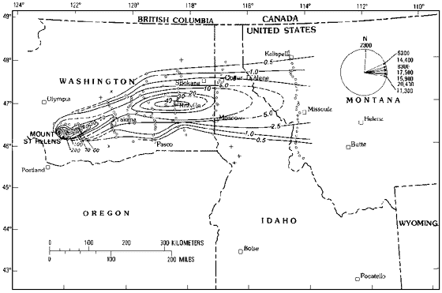
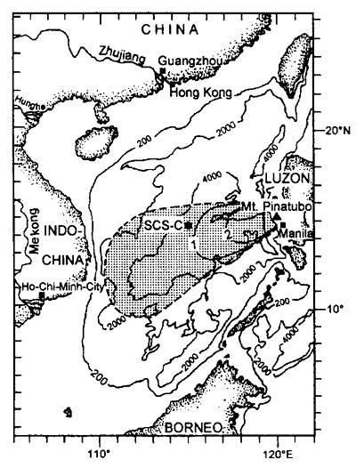
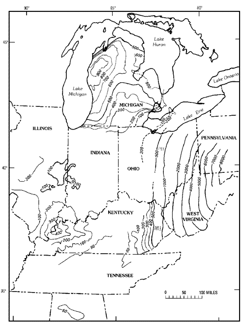
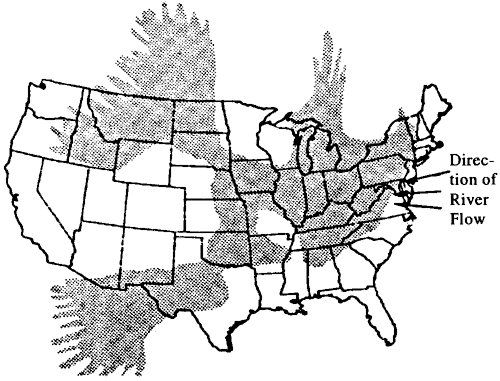

O Xisto de Chattanooga do Devoniano
É de Verdade um Depósito de Cinzas Vulcânicas?
Uma Revisão de um Artigo da Creation Research Society Quarterly
Copyright © 1997 por
James L. Moore
[Última Atualização: 3 de outubro de 1997]
Este documento pode ser reproduzido sem royalties para uso não lucrativo e não comercial.

Introdução
Como geólogo cujo hobby é o debate criação/evolução, leio ocasionalmente artigos de interesse profissional que aparecem na "Creation Research Society Quarterly" (CRSQ) a fim de manter-me atualizado sobre o pensamento criacionista atual no campo da geologia.
Na edição de dezembro de 1996, um artigo de Carl Froede Jr., intitulado "Uma teoria para a origem vulcânica de xistos e argilas radioativos: exemplos dos Estados Unidos do Sudeste," sustentou que o Xisto de Chattanooga do Devoniano da América do Meio e o Grupo Hawthorn do Terciário da Flórida eram cinzas vulcânicas alteradas depositadas durante o dilúvio bíblico. Froede também argumentou que a fonte do urânio encontrado nessas formações é um depósito primário dessa cinza.
Como seus argumentos eram de natureza falsificável, escrevi duas cartas privadas ao Sr. Froede explicando os problemas com suas contendas. Ele desafiou-me a apresentar esses argumentos na CRSQ, para que os leitores daquela publicação pudessem ter a oportunidade de comparar os dois pontos de vista.
Este artigo foi submetido ao CRSQ para publicação como um artigo de "Comentários". O editor solicitou que o artigo fosse reduzido para entre 1/3 e 1/4 do seu tamanho atual. Se o artigo tivesse sido reduzido conforme solicitado, grande parte de seu impacto teria sido perdida. Portanto, permiti que este artigo fosse postado na Internet para que toda a minha crítica possa ser apresentada ao público.
Como o CRSQ não é uma revista revisada por pares, sua qualidade só pode ser avaliada submetendo seus artigos ao escrutínio público. Portanto, apelo a educadores e cientistas de todas as áreas para se juntarem a mim na submissão de críticas a seus artigos.
Avaliação do Artigo
Minha atenção foi recentemente atraída por um artigo, Uma teoria para a origem vulcânica de xistos e argilas radioativos: exemplos dos Estados Unidos do Sudeste, de Carl R. Froede, Jr., que apareceu na edição de dezembro de 1996 da Creation Research Society Quarterly. A tese do Sr. Froede era que o Xisto de Chattanooga do período Devoniano e o Grupo Hawthorn do Terciário da Flórida foram depositados como cinzas vulcânicas. Sendo um geólogo do Tennessee, fiquei não apenas surpreendido pela tese do Sr. Froede, que vai fortemente contra a interpretação convencional, mas também pelo fato de ele não ter apresentado nenhuma evidência de campo original para apoiar seu argumento. O artigo foi apenas uma reinterpretação, seguindo diretrizes criacionistas, de artigos de revistas mainstream. Se o Sr. Froede pretende apresentar uma hipótese inteiramente nova que ofereça uma interpretação contrária ao pensamento geológico mainstream, é incumbência dele apresentar uma grande quantidade de pesquisa original com evidências que apoiem sua hipótese.
O propósito de publicar artigos em revistas é relatar novos dados obtidos a partir de pesquisa original e, se justificado, avançar uma nova hipótese para explicar esses dados. Embora o Sr. Froede não tenha apresentado nenhum dado original, ele afirma no título que sua contenda é uma "teoria". Teorias científicas são hipóteses que possuem muita evidência de suporte. Elas não apenas explicam dados, mas também preveem novas descobertas. A teoria germinal e a teoria gravitacional imediatamente vêm à mente como exemplos de teorias científicas testadas e provadas. O Sr. Froede apenas avançou seu argumento para o nível inicial de explicação científica: a hipótese.
Restringirei meus comentários ao Xisto de Chattanooga, uma vez que estou mais familiarizado com ele. Ao examinar o artigo do Sr. Froede, tentei manter em mente se há evidências para sua hipótese no Xisto de Chattanooga. No entanto, após estudá-lo, parece que existem várias evidências presentes no Xisto de Chattanooga que falam contra sua hipótese.
Os vulcões fornecem elementos radioativos suficientes para igualar o que é observado nas rochas?
A tese inteira do Sr. Froede é que as rochas vulcânicas contêm urânio primário suficiente para explicar a quantidade observada no Xisto de Chattanooga. Ele afirma:
Muitos depósitos de cinzas vulcânicas foram identificados como contendo níveis significativos de elementos radioativos. Daniels (1954, p. 193-194) cita a coleção de muitos depósitos de cinzas vulcânicas que foram encontrados contendo tanto urânio quanto tório.However when reading Daniels, we find:
Lava e cinzas, tanto ácidas quanto básicas, de muitos vulcões diferentes contêm menos de 1 ppm até 11 ppm de urânio. Na maioria dos casos, as contagens alfa são altas o suficiente para mostrar que o tório também está presente. A quantidade de materiais radioativos emitidos pelos vulcões é pequena, e varia muito com a localização do vulcão e com a fase da erupção.Daniels' data is substantiated by Zielinski (1982, p. 200), who reports uranium concentrations of 8 ppm in fresh, glassy, rhyolitic ash from the Troublesome Formation of Colorado. However, analyses of the Chattanooga Shale (Hickman and Lynch, 1957, p. 20) show that the average concentration of uranium in the Chattanooga Shale is .006 percent or 60 ppm. From the cited references, it would appear that volcanoes are incapable of supplying even this low concentration of uranium, at least as a primary deposit.
Um pouco mais adiante, o Sr. Froede diz:
...relata a lixiviação e precipitação de urânio e tório, a partir de fontes contendo elementos radioativos, através das águas subterrâneas. Cinzas vulcânicas são agora identificadas como a fonte de muitos depósitos de minério de urânio nos Estados Unidos ocidentais (Nations e Stump, 1981, p. 202-203; Sharp e Kyle, 1988, p. 470; Wood e Fernandez, 1988, p. 363).
A tese de Froede é que a fonte do conteúdo de urânio na cinza vulcânica é primária. Ou seja, o urânio estava presente quando o material foi erupcionado. Mas as referências que ele cita não sustentam sua posição. Wood e Fernandez (p. 363) reconhecem que "o alto conteúdo de urânio em rochas vulcânicas félsicas, em relação às básicas, torna-as as fontes mais atraentes". (Aqui, Wood e Fernandez usam a palavra "fontes" para se referir a depósitos minerais, o que é afirmado na primeira frase desta seção em seu artigo.) Mas a próxima frase afirma que "a concentração de urânio em rochas vulcânicas ocorre por precipitação direta de fluidos magmáticos, precipitação de fluidos hidrotermais e remobilização de urânio secundário por águas subterrâneas de baixa temperatura".
O Sr. Froede identificou erroneamente um enriquecimento secundário de urânio como um depósito primário, o que não é.
A propósito, sua referência a Sharp e Kyle (1988, p. 470) confere credibilidade à interpretação predominante de que o urânio está concentrado na matéria orgânica. Eles dizem:
O urânio é facilmente transportado como um íon uranil complexo com carbonato, sulfato ou fosfato em águas subterrâneas ricas em oxigênio. Quando a água rica em oxigênio encontra um ambiente quimicamente redutor, o urânio é reduzido ao estado tetravalente e precipita-se. Condições redutoras par excellence estão frequentemente associadas à presença de matéria orgânica em meios porosos, onde anaeróbios redutores de enxofre decompõem os orgânicos.
Este é precisamente o ambiente de deposição do Xisto de Chattanooga com seu conteúdo orgânico de 10-20%.
Uma análise detalhada das referências do Sr. Froede não oferece suporte para sua afirmação de que os vulcões fornecem urânio primário em quantidades comparáveis ao que é encontrado no Xisto de Chattanooga.
Qual é a fonte da matéria orgânica?
O Xisto de Chattanooga tem um teor orgânico muito elevado. Sem fornecer uma fonte, o Sr. Froede argumenta que a presença de matéria orgânica é devido a detritos:
Sugiro que o xisto de Chattanooga, conforme encontrado no Tennessee, originou-se como um depósito vulcanoclástico que se misturou com detritos orgânicos.
Conant e Swanson (1957, p. 19) identificam os constituintes orgânicos como algas marinhas e madeira flutuante carbonificada de uma espécie conhecida por existir no período Devoniano. Eles dizem:
Muitos fósseis de plantas e animais estão presentes no xisto... Os restos vegetais são de longe os mais abundantes e são responsáveis pela cor escura do xisto, mas a maioria deles está tão degradada e em fragmentos tão minúsculos que é melhor referi-los simplesmente como matéria carbonácea. Fósseis vegetais maiores são ocasionalmente vistos em planos de estratificação recém-expostos e são inequívocos. J. M. Schopf do U.S. Geological Survey identificou alguns deles como Callixylon, que chegou ao mar como madeira flutuante de áreas terrestres. Em seção transversal, os grandes restos vegetais aparecem como camadas finas e brilhantes de cor preta, comumente apenas de 1 a 2 mm de espessura, mas em alguns lugares de até 10 a 20 mm de espessura. Schopf (comunicação escrita, 1953) identificou, em amostras de vários afloramentos, partes das algas marinhas flutuantes livres Foerstia e Protosalvinia, ambas as quais são conhecidas apenas de rochas de idade Devoniana. Ele também reconheceu partes da planta algóide Prototaxites e várias variedades de esporos ou objetos semelhantes a esporos que ele atribuiu ao gênero de plantas terrestres Tasmanites [Tasmanites é agora conhecido como a ciste de uma alga prasinofítica marinha e plânctonica].
A origem da matéria orgânica no Chattanooga é há muito conhecida. Swanson (1960, p. 12) relata:
Digno de nota especial, no que diz respeito ao alto rendimento de óleo da amostra de Foerstia, é que White e Stadnichenko (1923) reconheceram há muito tempo essa alga em xisto negro do Devoniano como uma das principais "plantas-mãe" do óleo que pode ser derivado desses xistos; os abundantes casos de esporos, com seus semelhantes revestimentos protetores "ceroso-resinosos", também foram notados como substâncias fonte para o óleo extraível.
Portanto, a única conclusão lógica é que a matéria orgânica foi depositada juntamente com os constituintes minerais do Chattanooga.
Os orgânicos realmente importam?
O Sr. Froede não abordou as concentrações diferenciais tanto da matéria orgânica quanto do urânio associado encontrado em seções verticais do Chattanooga. Se a vida vegetal no mar tivesse sido morta no momento da queda de cinzas hipotetizada pelo Sr. Froede, esperaria-se observar uma única zona de material carbonáceo. Isso não é o que é observado. Como mencionado anteriormente, o Chattanooga possui um conteúdo orgânico excepcionalmente alto. Áreas de ressurgência, com sua alta atividade biológica, acumulam grandes quantidades de materiais orgânicos, que se tornam armadilhas para o urânio dissolvido. Essa afinidade do urânio dissolvido pela matéria orgânica explica a correlação entre os orgânicos e o urânio (Swanson, 1960, figs. 6 e 7). Outras unidades dentro do Chattanooga (veja abaixo), sem material orgânico concentrado, não apresentam esse enriquecimento de urânio.
O Sr. Froede observa:
Uma origem sin-genética também se adequaria para elementos radioativos derivados de uma camada de cinzas vulcânicas. A única diferença seria a de tempo.O trabalho realizado por Milici e Roen (1981, p. 2) demonstrou que o Xisto de Chattanooga pode ser dividido em quatro unidades com base na cor, que, por sua vez, é uma função do conteúdo orgânico. No entanto, seu estudo não relatou os níveis de radioatividade encontrados em cada intervalo.
O artigo de Milici e Roen abordou uma área no Tennessee Oriental. No Tennessee Central, o Chattanooga é dividido em cinco unidades estratigráficas (Swanson, 1960, p. 8). As duas inferiores são os Membros Lower e Upper Dowelltown, enquanto as três superiores são os Membros Lower, Middle e Upper Gassaway. A matéria orgânica e o urânio estão concentrados no Lower Dowelltown e nos Lower e Upper Gassaway. O Upper Dowelltown e o Middle Gassaway possuem concentrações relativamente menores de matéria orgânica e urânio. Na pesquisa para "Isopach and Structure Map of the Chattanooga Shale in Tennessee" (em andamento), essa variação na concentração de urânio tem sido observada a partir das assinaturas de registros de nêutrons e raios gama feitos em numerosos poços de teste de petróleo e gás.
A variação da matéria orgânica em seções verticais do Chattanooga teria fornecido ao Sr. Froede informações importantes, caso ele apenas a tivesse reconhecido. Não apenas a matéria orgânica aparece em toda a seção, mas sua concentração também varia verticalmente. Se todo o material tivesse caído simultaneamente, como ele defende, observaríamos uma correlação negativa entre o urânio e o conteúdo orgânico, pois concentrações aumentadas de matéria orgânica diluiriam o conteúdo de urânio de uma zona. Infelizmente para a hipótese do Sr. Froede, Swanson demonstrou conclusivamente que o conteúdo de urânio correlaciona-se positivamente, e não negativamente, com o conteúdo orgânico.
O Chattanooga Shale é um depósito de cinzas vulcânicas?
O Sr. Froede faz a seguinte afirmação:
Além disso, como anteriormente citado, muitas das camadas de xisto e argila radioativas são encontradas como unidades lateralmente contínuas que se estendem por milhares de milhas quadradas [três referências], e isso claramente se encaixa na descrição de uma queda de cinzas vulcânicas.
O Sr. Froede faz uma afirmação válida de que as unidades são muito amplamente distribuídas, mas depois faz uma afirmação infundada de que isso é evidência para uma queda de cinzas. Uma maneira de determinar se o Xisto de Chattanooga é um depósito de queda de cinzas seria comparar os isopacos (mapas que conectam pontos de espessura igual) do Xisto de Chattanooga e seus correlatos com os isopacos de quedas de cinzas vulcânicas conhecidas. O isopaco para a grande erupção do Monte St. Helens em 18 de maio de 1980 é mostrado na Figura 1 (Sarna-Wojcicki, et al., 1981, fig. 336). Um mapa para a erupção muito maior do Monte Pinatubo nas Filipinas é mostrado na Figura 2 (Wiesner, et al., 1995, fig. 1). Note que as espessuras são expressas em milímetros para a Figura 1 e em centímetros para a Figura 2. Note também que as formas de ambos os isopacos são ditadas pela direção predominante do vento.
|
 |
| Figura 1. Mapa de isopacas de ejecta de queda aérea da erupção do Mt. St. Helens em 18 de maio de 1980. As linhas representam a espessura não compactada, em milímetros. (Reproduzido com permissão de Sarna-Wojcecki, et al., Fig. 336.) |
|
 |
| Figura 2. Isopaca, em centímetros, de teofra da erupção de 1991 do Monte Pinatubo determinada a partir de núcleos do fundo do mar. A área sombreada indica a extensão da teofra de queda. (Reproduzido com permissão de Wiesner, et al., Fig. 1.) |
Na sua descrição das enormes erupções do período Ordoviciano, Huff et al. (1992, p. 876) afirmam que essas erupções "apresentam padrões de dispersão em forma de cogumelo que podem sobrepor as direções predominantes do vento." Nenhum dos dois mapas, nem o isopach em forma de cogumelo sugerido por Huff, apresenta qualquer semelhança com o mapa de isopach do Xisto de Chattanooga e correlatos nos Estados Unidos orientais (Matthews, 1993, fig. 3), mostrado na Figura 3. Observe que as espessuras neste mapa são expressas em centenas e, para o leste, em milhares de pés. Além disso, as formas dos contornos não apresentam nenhuma semelhança com as das Figuras 1 e 2.
|
 |
| Figura 3. Espessura preservada do xisto Devoniano-Mississipiano nos Estados Unidos do Leste. (Reproduzido com permissão de Matthews, 1983, Fig. 3.) |
Além disso, note na Figura 4 a área de deposição do Chattanooga Shale e seus equivalentes. O grande tamanho e forma da área de distribuição falam contra a hipótese do Sr. Froede.
|
 |
| Figura 4. Extensão aproximada do Mar de Chattanooga (Reproduzido com permissão de Weil, et al., Fig. 1.) |
O que as rochas dizem?
O Chattanooga e seus correlatos são conhecidos por sua litologia quase invariável. O quartzo que compõe uma grande porcentagem do Chattanooga é uniformemente fino a muito fino-granulado em toda a sua área de preservação. Há muito pouca graduação de tamanho. Conant e Swanson (1961, p. 43-45) descrevem o quartzo no Chattanooga da seguinte forma:
As generalidades a seguir são extraídas do estudo de lâminas finas de rochas no xisto de Chattanooga: (a) Os principais grãos minerais detríticos do xisto negro maciço são quartzo de tamanho de silte e quantidades algo menores de argila e mica, e esses grãos estão bem selecionados... Uma das características microscópicas mais marcantes do xisto negro aparentemente quase maciço é uma laminação bem definida que resulta de um alto grau de seleção dos grãos...Volcanic ash fall deposits on the other hand, decrease in size logarithmically away from the source (Blatt, 1972, p. 388, Sarna-Wojcicki, et al., 1981, p. 586). In the Mt. St. Helens eruptions of May 25, June 12, and July 22, 1980, Waitt, et. al., (1981, p. 620-623), report that the size distribution of the ash fall deposits ranges from gravel near the volcano down through decreasing sizes of sand and culminating in very fine sand and silt as one moves away from the volcano. Another very important fact of tephra deposition is that larger materials with detectable crystals of quartz, feldspar, etc., are found near the base of the deposit, while the finer materials are found near the top. The sand grains in volcanic ash are euhedral (displaying crystal faces) to angular, reflecting a very short history with little or no abrasion during transport. None of this can be thought to be in any way descriptive of the very well-sorted, silt-sized, rounded quartz in the Chattanooga Shale.QUARTZO
O quartzo extremamente fino-granulado é o constituinte principal dos leitos de xisto negro de Chattanooga e provavelmente compõe cerca de 20 a 25 por cento da rocha. Separações de silte de quartzo são visíveis em toda a formação, e o exame petrográfico mostra que até separações mais finas são especialmente características do que aparece na afloramento como a parte mais maciça da formação (pl. 11b). Dentro do xisto negro mais denso estão camadas microscópicas, comumente com menos de 0,1 mm de espessura, compostas de grãos de quartzo variando de 0,02 a 0,06 mm e com média de cerca de 0,03 mm no maior diâmetro. Quartzo ainda mais fino, variando em diâmetro de cerca de 0,004 a 0,012 mm e com média de 0,008 mm, está disseminado de forma bastante uniforme em todo o xisto maciço. . . Em geral, os grãos de quartzo são grãos de areia típicos que mostram vários graus de arredondamento, mas poucas outras características indicativas de sua história.
Há fragmentos de rocha vulcânica no Chattanooga?
O Sr. Froede não apresentou nenhuma evidência para qualquer tipo de rocha vulcânica no Chattanooga. Se ele tivesse encontrado amostras de tufo andesítico ou fenocristais angulares, sua hipótese possivelmente teria tido pelo menos algum suporte. No entanto, não há menção a nenhum tipo de rocha presente, seja em estado fresco ou alterado pelo intemperismo.
Podem as cinzas vulcânicas reais fornecer material suficiente?
Os bentonitos são reconhecidos pela geologia mainstream como sendo formados por erupções vulcânicas. De fato, os bentonitos T-3 e T-4 no Calcário de Carters do Ordoviciano Médio do Tennessee Central (Wilson, 1949, p. 62) são interpretados como cinzas de riolito alteradas. Os bentonitos contêm biotita, um mineral ígneo comum. Outros bentonitos bem preservados contêm fragmentos de vidro vulcânico, pumita e bolhas (Rose e Chesner, 1987, p. 914). Os bentonitos T-3 e T-4 (Dieke e Millbrig, respectivamente) foram depositados durante uma erupção descrita por Huff et al. (1992, p. 875) e revisada e atualizada em Huff et al. (1996, p. 285-301). O equivalente mínimo de rocha densa (DRE) das erupções que formaram esses dois bentonitos foi de 2.481 km3. Para dar uma perspectiva da magnitude dessa erupção em relação a outras erupções modernas, a tabela a seguir é reproduzida com permissão de Huff (1992, tabela 2).
| Eruptão | Ref. | Magnitude (km3 DRE) |
| Millbrig-Big Bentonite | 1 | 1,140 (Revisado para 2,481) |
| Toba | 2 | 600 |
| Huckleberry Ridge | 3 | 400 |
| Los Chocoyos | 4 | 150 |
| Bishop | 5 | 100 |
| Upper Bandelier | 6 | 60 |
| Tambora F-5 | 7 | 20 |
| Taupo | 8 | 5.8 |
| Mt. St. Helens | 9 | 0.2 |
| Tabela 1. Magnitude de queda de cinzas de algumas erupções plinianas | ||
Por grandes que tenham sido essas duas erupções, as espessuras das bentonitas T na área do Tennessee Central estão na ordem de 6 polegadas (15 cm). Isso não é de forma alguma comparável à espessura do Xisto de Chattanooga. Foi encontrado que ele tem uma espessura média no Tennessee entre 84 e 85 a 30' W. Longitude de 33,7 pés (10,3 m) (Moore, em andamento) com base em espessuras de mais de 800 poços de teste de petróleo e gás.
O que os minerais de argila do Chattanooga dizem?
A cinza vulcânica altera-se em argila do mineral smectita (montmorilonita) (Berry e Mason, 1959, p. 509). Posteriormente, a alteração para uma composição de camadas mistas de illita-smectita ocorre devido ao enterramento progressivo, metamorfismo de contato e alteração hidrotermal, entre outros mecanismos (Elliot, et al., 1991, p. 436). Bates e Strahl (1957, p. 1308) relatam uma análise da mineralogia de argila de uma amostra do Chattanooga como sendo predominantemente illita com alguma caulinita presente. Não foi encontrada smectita. Portanto, a mineralogia de argila do Chattanooga não oferece suporte à afirmação do Sr. Froede.
O xisto de Chattanooga é realmente um minério?
Embora existam vários outros, a última afirmação errônea do Sr. Froede que abordarei é a seguinte:
Os níveis de urânio encontrados dentro do xisto são suficientemente altos para qualificar o xisto como um minério de urânio (Upham, 1992, p. 47).
O Glossário de Geologia define minério como "o material que ocorre naturalmente do qual um mineral, ou minerais, de valor econômico pode ser extraído." O qualificativo de lucro na definição é muito importante. A menos que se possa esperar ganho monetário de uma operação, que custa milhões de dólares para ser financiada, não há sentido em desenvolvê-la a menos que perder dinheiro seja o objetivo.
Segue a parte pertinente dos comentários de Upham sobre a viabilidade econômica. É fácil perceber que Upham disse algo bastante diferente do que o Sr. Froede alega, e as condições econômicas atuais não sustentam a afirmação de que o Xisto de Chattanooga é um minério de urânio.
O urânio ocorre em vários ambientes mineralógicos diferentes no Tennessee, embora minerais de urânio discretos e identificáveis sejam muito raros aqui. Foram relatadas concentrações que variam de 0,001 a 0,03 por cento. Nenhum deles provou ser economicamente significativo, a maioria estando abaixo do teor de minério por um fator de 10 ou mais ... A fonte mais promissora de urânio no Tennessee é o xisto de Chattanooga negro e carbonáceo, que contém de 0,001 a 0,03 por cento de urânio disseminado. (Ênfase adicionada.)
Conclusões
Além da falta de qualquer nova informação, dados ou evidências, os problemas com a hipótese de queda de cinzas do Sr. Froede são, em resumo:
- Vulcões não são uma fonte de radioatividade significativa.
As concentrações de urânio na cinza vulcânica são deficientes em urânio por um
fator entre cinco e dez quando comparadas às concentrações médias
no Chattanooga.
- Algas, esporos de plantas e detritos de madeira de plantas devonianas conhecidas
são as fontes da matéria orgânica no Xisto de Chattanooga.
- A variação vertical da matéria orgânica e do urânio na
seção de Chattanooga dá credibilidade à interpretação mainstream da
origem do Xisto de Chattanooga. A hipótese do Sr. Froede está em
conflito com a correlação positiva observada entre matéria orgânica e
urânio.
- Uma comparação de mapas de isopacas e geográficos de erupções vulcânicas
e da distribuição do Xisto de Chattanooga não oferece evidências
de uma origem vulcânica em termos de forma e volume.
- O Chattanooga é composto por grãos de areia muito bem selecionados,
de tamanho de silte, arredondados, enquanto os ejecta vulcânicos variam
tremendamente tanto em tamanho, forma cristalina, distribuição vertical
do tamanho dos grãos, quanto distribuição geográfica.
- Nenhuma evidência foi apresentada para a presença de qualquer tipo de rocha
vulcânica ou cristais minerais vulcânicos frescos.
- Erupções vulcânicas são incapazes de produzir uma quantidade suficiente
de material para explicar as espessuras observadas e a distribuição
de área do Chattanooga.
- A mineralogia de argilas do Xisto de Chattanooga (ilita sem esmectita)
reflete uma origem erosiva em vez de alteração de cinza vulcânica.
- Só se pode perguntar por que o Sr. Froede afirma que as concentrações de urânio no Xisto de Chattanooga qualificam-no como um minério quando Upham afirma claramente que está aquém da qualidade de minério por um fator de pelo menos dez.
Embora o Sr. Froede tenha referenciado de forma admirável as explicações mainstream para a origem de xistos radioativos, no final, descartou o papel que o material orgânico desempenha na retenção de elementos radioativos e concentrou-se apenas em sua origem. Sua hipótese sobre a origem primária de xistos radioativos a partir de cinzas vulcânicas pode parecer viável para alguns, mas não resiste a um exame rigoroso ou à comparação com as evidências.
Agradecimentos
Gostaria de expressar minha profunda gratidão a vários participantes regulares do talk.origins que leram criticamente e fizeram sugestões muito úteis para a preparação deste artigo.
Referências
Bates, T. F., and E. O. Strahl, 1957, Mineralogia, petrografia e radioatividade de amostras representativas do Xisto de Chattanooga: Bulletin da Sociedade Geológica da América, v. 68, p. 1305-1314.
Berry, L. G., e Brian Mason, 1959, Mineralogia: W. H. Freeman and Co., São Francisco.
Blatt, Middleton, e Murray, 1972, Origem das Rochas Sedimentares: Prentice-Hall, NJ, p. 388.
Conant, L. C., e V. E. Swanson, 1961, Chattanooga shale and related rocks of Central Tennessee and nearby areas: United States Geological Survey Professional Paper 357.
Elliot, W. C., Aronson, J. L., Matisoff, G., e Gautier, D. L., 1991, Cinética da transformação de smectita em illita na Bacia de Denver: dados de minerais argilosos, K-Ar e resultados de modelo matemático: Bulletin da American Association of Petroleum Geologists, v. 75, p. 436-462.
Glossário de Geologia, 1972, Margaret Gary, Robert McAfee, Jr., e Carol L. Wolf, (eds.), Instituto Geológico Americano, Washington.
Hickman, R. C., e V. J. Lynch, 1957, Investigações do Xisto de Chattanooga: Relatório de Investigações do Escritório de Mineração dos Estados Unidos 6932.
Huff, Warren D., et al., 1992, Queda de cinzas vulcânicas ordovicianas gigantes na América do Norte e na Europa, significância biotectonomagmática e estratigráfica de eventos: Geology, v. 20, p. 875.
______, 1996, Quedas de cinzas vulcânicas de grande magnitude no Ordoviciano Médio na América do Norte e na Europa: dimensões, emplacamento e características pós-emplacamento: Journal of Volcanology and Geothermal Research, v. 73, p. 285-301.
Matthews, David R., 1993, Revisão e revisão da estratigrafia Devoniano-Mississippiano na Bacia do Michigan: p. D4 em Geologia do petróleo do shale preto Devoniano e Mississippiano da América do Norte Oriental: Roen, John B., e Roy C. Kepferle, (eds.), United States Geological Survey Bulletin 1909.
Milici, Robert C., e John B. Roen, 1981, Stratigraphy of the Chattanooga Shale in the Newman Ridge and Clinch Mountain areas, Tennessee: Tennessee Division of Geology Report of Investigations 40.
Moore, James L., (em andamento), Mapa de isopacas e estrutura do Xisto de Chattanooga no Tennessee: Relatório de Investigações da Divisão de Geologia do Tennessee.
Rose, W. L., e C. A. Chesner, 1987, Dispersão de cinzas na grande erupção do Toba, 75Ka: Geology, v. 15, p. 913-917.
Sarna-Wojcicki, et al., 1981, Distribuição areal, espessura, massa, volume e tamanho de grão de cinzas de queda de ar das seis erupções principais de 1980: p. 583, em As erupções de 1980 do Monte St. Helens: Lipman, Peter W., e Donal R. Mullineaux (eds.), United States Geological Survey Professional Paper 1250.
Sharp, J. M., Jr., e J. K. Kyle., 1988, Processos de águas subterrâneas na formação de depósitos minerais: em Back, W., J. S. Rosenshein, P. R. Seaber (eds.). Hydrologia: Geological Society of America, The Geology of North America Volume O-2. pp. 461-483.
Shrock, Robert R., e W. H. Twenhofel, 1953, Princípios de Paleontologia Invertebrada: McGraw-Hill Book Company, Nova York.
Swanson, Vernon E., 1960, Oil yield and uranium content of black shales: United States Geological Survey Professional Paper 356A.
Upham, G. A., 1992, Urânio em Upham, G. A. (Coordenador). Minerais do Tennessee anuais: Divisão de Geologia do Tennessee Boletim 83. Nashville. p. 47.
Waitt, Richard B., et al., 1981, Depósitos de queda de ar proximal de erupções entre 24 de maio e 7 de agosto de 1980 – estratigrafia e sedimentologia de campo: em As erupções de 1980 do Monte St. Helens: Lipman, Peter W., e Donal R. Mullineaux (eds.), United States Geological Survey Professional Paper 1250.
Weil, S. A., H. L. Feldkircher, D. V. Punwani, e J. C. Janka, 1979, O processo IGT HytortTM para retorting de xisto de petróleo do Devoniano: Fig. 1, p. 5, em Avaliação Nacional de Recursos de Urânio: Conferência de Chattanooga Shale, Departamento de Energia dos EUA.
White, David, e T. M. Stadnichenko, 1923, Algumas plantas-mãe do petróleo nas xistos negros do Devoniano: Economic Geology, v. 18, no. 3, p. 238-252.
Wiesner, Martin G., Y. Wang, e L. Zheng, 1995, Deposição de cinzas vulcânicas no mar do Sul da China profunda induzida pela erupção de 1991 do Monte Pinatubo (Filipinas): Geology, v. 23; no. 10; p. 885-888.
Wilson, Charles W., Jr., 1949, Estrografia pré-Chattanooga no Tennessee Central: Boletim 56 da Divisão de Geologia do Tennessee, 407 p.
Zielinski, R. A., 1982, A mobilidade do urânio e de outros elementos durante a alteração de cinzas riolíticas em montmorilonita: um estudo de caso na Formação Troublesome, Colorado: Chemical Geology, v. 35, p. 185-204.
Biografia
James Moore tem sido geólogo na Divisão de Geologia do Tennessee, em Nashville, nos últimos 25 anos. Seus interesses de pesquisa incluem mapeamento geológico em terrenos do período Pennsylvanian com falhas, e ele está atualmente realizando pesquisas para um mapa estadual da espessura e estrutura do Xisto de Chattanooga. Criticar o criacionismo é uma de suas paixões.